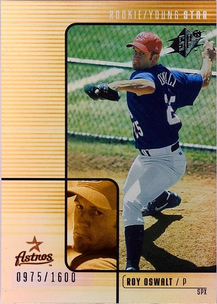
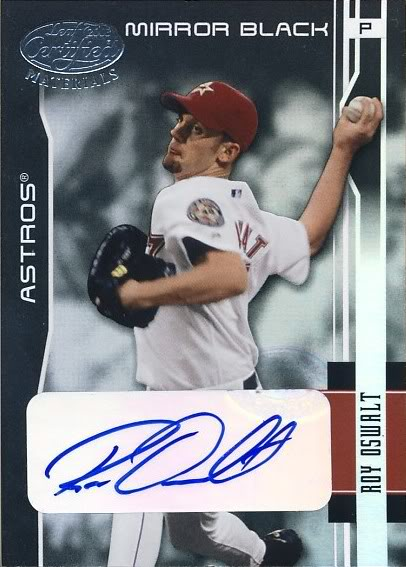
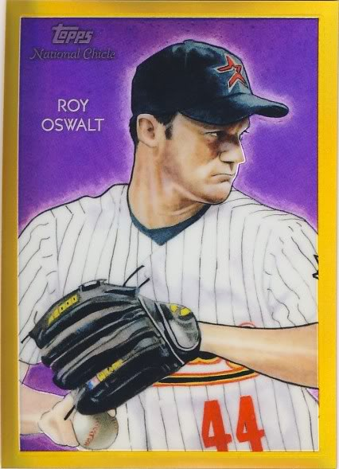
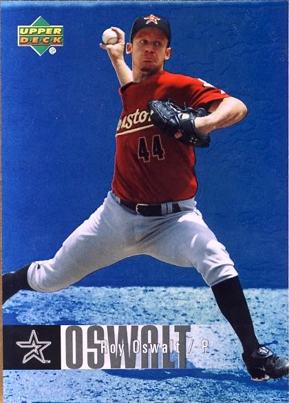
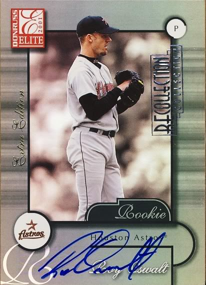

This page has GU from 2001-2009. Red text indicates a sold card.
The Definitive Roy Oswalt Collection
    - 2001 Absolute Memorabilia #176 RPM 69/700
- 2001 Donruss Class of 2001 Rookie Team Materials #RT12 Batting Glove 26/50
- 2001 Donruss Class of 2001 Scrapbook #SB6 28/150
- 2001 Leaf Certified Materials #127 FF Spikes 76/200
- 2001 Leaf Certified Materials Mirror Gold #127 FF Spikes 3/25
- 2001 Leaf Limited #355 Bat 67/100


Total:
- 2002 Donruss Classics New Millennium Classics #48 Patch 131/500
- 2002 Fleer Hot Prospects MLB Hot Materials #RO
- 2002 Leaf Certified Fabric of the Game #127BA 40/100
- 2002 Leaf Certified Mirror Gold #67 Jsy 17/25
- 2002 Sweet Spot USA Jerseys #RO Own 2


Total:
- 2003 Diamond Kings Diamond Cut Collection #68 Jsy 265/500
- 2003 Donruss Classics Dress Code #48 Hat-Jsy/200
- 2003 Donruss Gamers Prime #35 13/25
- 2003 Finest Uniform Relics #RO G
- 2003 Flair Diamond Cuts Jersey #RO
- 2003 Flair Diamond Cuts Jersey Gold #RO 39/100
- 2003 Fleer Patchworks Game-Worn Patch #RO2 3/100
- 2003 Fleer Patchworks Game-Worn Patch #RO2 113, 119, & 251/300,
- 2003 Fleer Patchworks Game-Worn Patch Level 2 Dual #RO 38 & 77/100
- 2003 Fleer Patchworks Game-Worn Patch Level 3 Multi #RO 4/50
- 2003 Fleer Platinum Nameplates #RO 22/155
- 2003 Leaf Certified Materials Mirror Blue Materials #70 Jsy 73/100
- 2003 Leaf Certified Materials Mirror Gold Materials #70 Jsy 19/25
- 2003 Leaf Certified Materials Mirror Red Materials #70 Jsy 250/250
- 2003 Leaf Limited Threads #74 A 1/25
- 2003 Leaf Limited Threads #114 H 16/25
- 2003 Leaf Limited Threads Number #74 A 5/44
- 2003 Leaf Shirt off my Back #10 452/500
- 2003 Playoff Piece of the Game #84A JSY
- 2003 Studio Player Collection #62 Jsy 54/300
- 2003 Topps 205 Relics #RO Jsy I1
- 2003 Upper Deck Classic Portraits Stitches Patch #RO 74/99
- 2003 Upper Deck Finite Elements Game Patch #RO 10/25
- 2003 Upper Deck Game Face Gear #RO
- 2003 Upper Deck Game Face Patch #RO 12/100
- 2003 Upper Deck Leading Swatches #RO WIN


Total:
- 2004 Leaf Certified Materials Mirror Fabric Gold Number #166 Jsy 22/25
- 2004 Leaf Limited Threads Jersey Number #240 H 24/25
- 2004 Leaf Limited Threads Jersey Prime #137 A 1/1
- 2004 SP Game Used Patch Premium Update #RO 10/20
- 2004 Upper Deck Play Ball Apparel Collection #RO
- 2004 Upper Deck Vintage Stellar Stat Men Jerseys #37


Total:
- 2005 Artifacts Dual Artifacts #CO Jsy w/R. Clemens 71/99
- 2005 Artifacts MLB Apparel #RO Jsy 130/325
- 2005 Diamond Kings Materials Framed Red #104 Jsy-Jsy 71/100
- 2005 Diamond Kings Materials Gold #104 Jsy-Jsy 47/50
- 2005 Donruss Timber and Threads Combo #33 Bat-Jsy
- 2005 Fleer Authentix Game of the Week Jersey #WO w/K. Wood 23/50
- 2005 Fleer Patchworks By the Numbers Jersey #RO
- 2005 Fleer Patchworks By the Numbers Patch Die Cut #RO 7/25
- 2005 Leaf Cerified Materials Mirror Fabric Red Jsy 176/250
- 2005 Leaf Limited Threads Jersey Prime #45 23/100
- 2005 Prime Patches Materials Jersey #38 129/150
- 2005 Prime Patches Materials Name Plate Patch #38 4/5
- 2005 Prime Patches Portraits Jumbo Swatch #9 125/163
- 2005 Reflections Fabric Patch #RO 35/99
- 2005 Studio Spirit of the Game Jersey #10 155/250
- 2005 SP Authentic Jersey Gold #84 59/99
- 2005 Topps Update All-Star Patches #RO 9/60
- 2005 Ultimate Collection Hurlers Patch #RO 7/25
- 2005 Zenith Z-Jerseys #35 T2


Total:
- 2006 Exquisite Collection Patch #RO 15/25
- 2006 Sweet Spot Super Sweet Swatch #RO Jsy 43/299
- 2006 Topps Allen and Ginter Relics #RO Jsy G
- 2006 Topps Turkey Red Relics #RO Jsy
- 2006 Topps Turkey Red Relics White #RO Jsy 42/99
- 2006 Ultimate Collection Tandem Materials Patch #CO w/R. Clemens 12/35
- 2006 Ultimate Collection Game Patches #RO 2/50


Total:
- 2007 Artifacts Divisional Artifacts Limited #RO 31/130
- 2007 SPx Winning Materials 175 Green #RO 120/175
- 2007 SPx Winning Materials 199 Gold #RO 88/199
- 2007 Sweet Spot Sweet Swatch Memorabilia #OS
- 2007 Topps Highlights Relics #RO Jsy A
- 2007 UD Masterpieces Captured on Canvas #RO
- 2007 Ultimate Collection Ultimate Ensemble Dual Swatches #OB w/L. Berkman 5/75
- 2007 Ultimate Collection Ultimate Star Materials #OR
- 2007 Upper Deck Elements Essential Elements #RO Roy Oswalt
- 2007 Upper Deck Premier Patches Triple Gold #RY 6/50
- 2007 Upper Deck Premier Rare Remnants Triple Gold #OPS w/J. Peavy/B. Sheets 12/25
- 2007 Upper Deck UD Game Materials #RO S2


Total:
- 2008 SP Legendary Cuts Destined for History Memorabilia #RO Roy Oswalt
- 2008 SPx Winning Materials Dual Limited Patch SPx #RO 43/50
- 2008 SPx Winning Materials Dual Limited Patch Team Initials #RO 7/25
- 2008 SPx Winning Materials Jersey Number #RO 19 & 49/125
- 2008 SPx Winning Materials Limited Patch SPx #RO 59/99
- 2008 SPx Winning Materials SPx #RO 116/150
- 2008 SPx Winning Materials SPx Die Cut #RO 138/150
- 2008 Sweet Spot Swatches Dual #DS-OZ w/C. Zambrano
- 2008 Topps Allen and Ginter Relics #RO JSY C
- 2008 Topps Heritage Clubhouse Collection Relics #RO D
- 2008 UD A Piece of History Stadium Scenes Jersey Red #SS26
- 2008 UD Masterpieces Captured on Canvas #RO
- 2008 Upper Deck Goudey Memorabilia #RO
- 2008 Upper Deck Premier Patches #RO 27/75
- 2008 Upper Deck Premier Patches Gold #RO 37/50
- 2008 Upper Deck Premier Patches Gold Milestones Jersey Number #RO 13/44
- 2008 Upper Deck Premier Quad Patches #POBS w/J. Peavy/J. Beckett/B. Sheets 13/20
- 2008 Upper Deck Spectrum Spectrum Swatches Dual #OB w/L. Berkman 88/99


Total:
- 2009 SP Legendary Cuts Destined for History Memorabilia #RO
- 2009 Topps Allen and Ginter Relics #RO Jsy A
- 2009 Topps Career Best Relics Jumbo #RO 10/20
- 2009 Topps Unique Primetime Patches #PTP102 68/99
- 2009 Upper Deck Icons Icons Jerseys Gold #RO 8/25